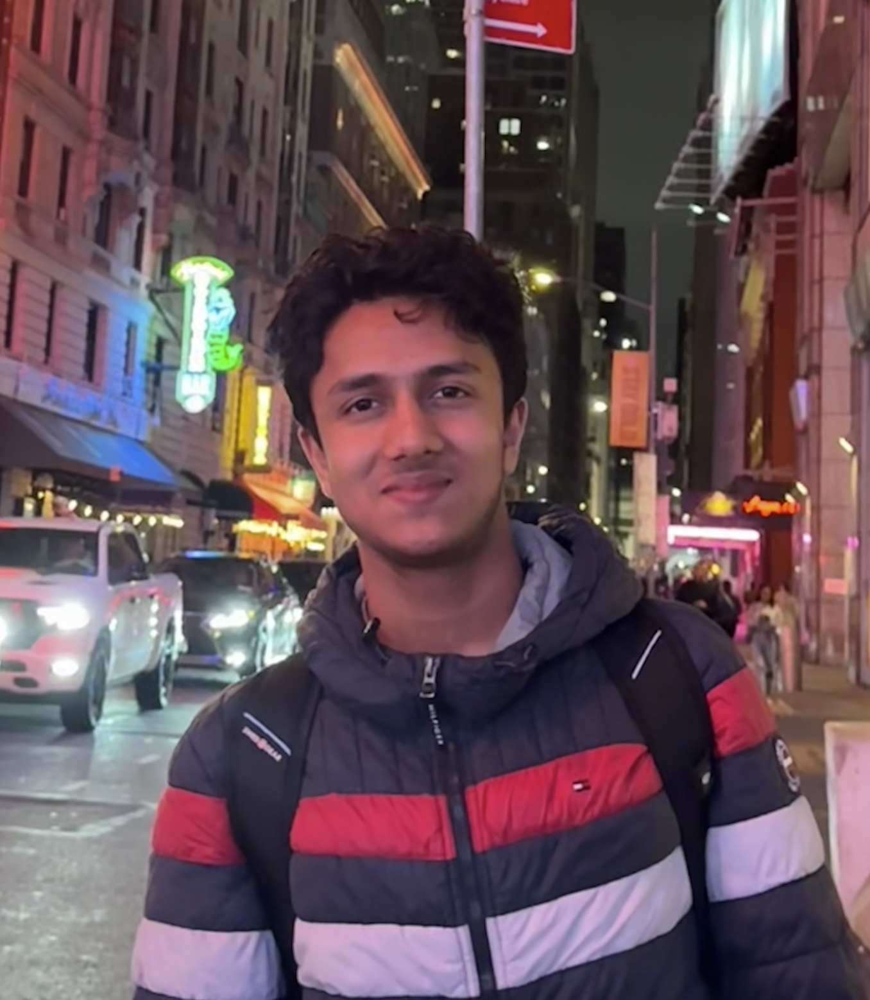

A benchmark, structure-aware metric, and correction pipeline for finding and repairing factual errors in LLM-generated table summaries.

I’m an incoming student at the University of Pennsylvania, planning to study Cognitive Science and Computer Science alongside Statistics and Data Science. My work sits where language, neuroscience, and machine learning meet.
I’ve explored that intersection through explainable quantum ML at Google Quantum AI, single-cell biomarker discovery at Northwestern, and computational neurolinguistics at Carnegie Mellon. Across those settings, the question is consistent: how can we understand a system well enough to make it more reliable?
I also co-founded Pay it Forward Science, a nonprofit that has brought STEM workshops to more than 3,000 students. Outside of research, I play competitive chess and study Jain philosophy.
Google Quantum AIExplainable AI · quantum machine learning
Northwestern FeinbergBioinformatics · single-cell RNA-seq
Carnegie MellonComputational neurolinguistics · EEG
Projects
Built to answer a questionA research-backed platform for prompt genotyping: mapping human intent to measurable LLM behavior and exposing where synthetic benchmarks diverge from real performance.
An AI-assisted web app for identifying insect bites from images and turning model output into practical next-step guidance.
Research
Selected publicationsI’m interested in the internal structure and dynamics of intelligent systems, especially how those mechanisms shape reasoning, memory, truthfulness, and efficiency.
My current work connects mechanistic ideas with practical evaluation: measuring failure precisely, locating its source, and building interventions that do not require expensive retraining.
TabFaith: Benchmarking and Improving Structural Faithfulness in LLM Table Summarization
SURGeLLM 2026 · proceedings · oral presentation
Introduces a 2,400-example benchmark, a structure-aware faithfulness metric, and a training-free correction method for table summaries.
Energy Landscapes of Truthfulness in LLM Attention
ICLR 2026 · NFAM Workshop · poster
Tests whether Hopfield-style energy signatures in attention logits distinguish truthful from false answers without fine-tuning the base model.
Prompt Genotyping: Quantifying the Evaluation Gap Between Synthetic Benchmarks and Real LLM Performance
NeurIPS 2025 · LLM Evaluation Workshop · poster
Formalizes prompt genotyping as a way to compare intended prompt behavior with measurable model outcomes.
Cryptographic Fingerprinting for Medical AI: A Proof-of-Concept Approach to Protecting Healthcare ML Models from API Extraction
NeurIPS 2025 · Lock-LLM Workshop · poster
Embeds detection-ready fingerprints in model uncertainty patterns while preserving clinical predictions.
Cell-Type-Aware Single-Cell ML Reveals Distinct Biomarkers for Sarcoidosis Prognosis and CBD Differentiation
ACM-BCB 2025 · proceedings
Uses cell-type-aware machine learning on single-cell RNA-seq data to surface disease-specific biomarker patterns.
Additional publication title
Venue / preprint status placeholder
One-sentence explanation of the question, method, and result goes here.
Skills
Methods + toolsMachine learning
PyTorchscikit-learnHugging FaceNLPcomputer visionmodel evaluation
Research & data
PythonPandasNumPysingle-cell RNA-seqEEG analysisstatistical testing
Software
TypeScriptJavaScriptReactNext.jsHTML/CSSREST APIs
Specialized systems
LLM APIsNLI pipelinesquantum MLVercelGitLaTeX
Recognition
Selected honorsNational Merit State Farm Scholar
SURGeLLM, top-six oral paper
National JSHS Finalist
Congressional App Challenge Winner
YC Wedge Fellow
AAAI-26 Program Committee
NSA ChiCyberCon, invited presenter
YICU Service Award